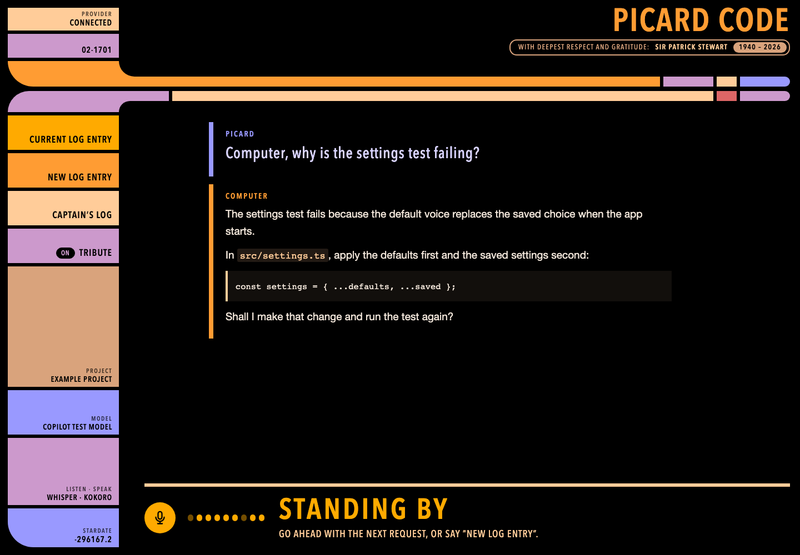

The computer’s character
Original wording, better follow-ups and corrections, clearer pronunciation, and comfortable timing. Calm and precise, with “Captain” now and then. Never a parody.
Unofficial · MIT license
1940 to 2026
With deepest respect and gratitude. Picard Code is an open source tribute that lets you speak to your computer as the Captain spoke to his ship: plainly, precisely, and expecting the truth.
01The tribute
A classical stage actor, Sir Patrick Stewart gave Captain Jean-Luc Picard his calm authority, his warmth, and his voice, across seven seasons of Star Trek: The Next Generation, four films, and Star Trek: Picard.
On the bridge, Picard thought aloud, asked exact questions, and expected exact answers. He spoke to the ship’s computer as he spoke to his crew: courteously and without fuss. Picard Code tries to honor that conversation in ordinary work at a desk.
Thank you, Sir Patrick.
02The computer
A small app on your own computer. You speak, OpenCode does the coding with the model provider you choose, and the computer answers aloud while the detail appears on screen. Your log entries are kept in Captain’s log, marked with stardates.

03Join the tribute
Contributions are welcome when they keep the spirit of the tribute: respectful, original, and genuinely useful.
Original wording, better follow-ups and corrections, clearer pronunciation, and comfortable timing. Calm and precise, with “Captain” now and then. Never a parody.
New listening and speaking services, especially local ones, with clear licenses, setup, hardware needs, data destinations, and honest failure handling.
Also welcome: accessible desktop controls, real microphone and accent testing, easier setup on Windows, macOS, and Linux, and reliability. Ideas, evidence, and documentation count too.
Please do not add show dialogue, artwork, recordings, or cloned voices. Original work only.
04Run it
You need Node.js 22.12 or newer, Git, uv (it installs the Python that local speech uses), a microphone, and a model provider OpenCode can use. Listening and speaking run on your computer by default, so no cloud account is needed for speech. This website is only an introduction; it does not run the app or listen to you.
Automated checks use labeled stand-ins. They do not prove that physical microphones, speakers, or real model and speech services work, and earlier real-service results predate OpenCode 2. The checks and their limits
git clone https://github.com/sbroenne/picard-code.git
cd picard-code
npm install
npm run setup:speech
npm run build
npm start